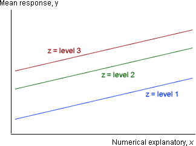

Model with no interaction
If there is no interaction between a numerical explanatory variable, X, and a categorical explanatory variable, Z, the model can be represented by parallel lines for the different levels of the categorical variable on a scatterplot of Y against X.

In this diagram, there is the same slope for each level of Z, so changes to X have the same effect whatever the value of Z.
Model with interaction
On the other hand, the following diagram shows interaction between the effects of X and Z. If this model holds, increasing X has far more effect on the response at z = 3 than at z = 1.
Gas consumption and insulation
Data were collected in the 1960s at a house in south-east England about weekly gas consumption (in 1000 cubic feet) and the average outside temperature (in degrees Celsius) for 26 weeks before and 18 weeks after cavity-wall insulation had been installed. The house thermostat was set at 20°C throughout.
Drag the three red arrows to fit the two parallel lines for the no-interaction model as close as possible to the data, then click Least squares to minimise the sum of squared residuals.
Click Allow interaction then repeat.
The model allowing interaction estimates that gas consumption decreases with increasing temperature more sharply when there is no insulation.
Modelling interaction
We will set up our model in a way that makes it easier to test for the existence of interaction. One level of the categorical variable is treated as a 'baseline' level and a simple linear model is used for observations in this 'group'.
The models for observations in the other groups are based on this, but have extra terms allowing the intercept and slope to be different.
When the model is specified in this way, there is no interaction when the delta-parameters are zero and this can be tested.
Expressing the model as a GLM
This model can be written as a general linear model (GLM) with extra 'explanatory variables' for the non-baseline groups. This is easier to demonstrate than to explain in words.
Californian wine quality
Wines from various parts of California were judged in a competition. We consider here a model for the overall Quality of the wines in terms of their Body and the part of California in which they were produced, North, Napa valley and Central.
The matrices below show the model for 21 of these wines. (There were actually more, but we have reduced the size of the data set to simplify the diagram.)
Drag over the rows for the first 7 wines and observe the form of the model under the matrices. These rows are all from the baseline category (the North), so the model for these wines only involves the parameters β0 and β1.
Now select rows from the Central region. All wines in this region have a different intercept (β0+β2) and a different slope (β1+δ1).
Finally select rows from the Napa valley and observe that their model again allows for a different intercept and slope.
Note that the columns for the interaction in the design matrix are all products of columns for the main effects of the two variables.
Gas consumption and insulation
We finally repeat the gas consumption diagram that was shown at the start of this page, but showing the numerical values for the model parameters.
Firstly drag the two arrows for the baseline group (before insulation) and observe that they specify the linear model for this group.
Now drag the red arrow for the second group (after insulation) and observe that the coefficient of the indicator variable in the model, DAfter, is the distance between the two parallel lines.
Finally click Allow interaction and drag the righthand arrow on the red line. The coefficient of the final term in the model is the difference between the slopes of the before and after insulation. (It is zero if both lines are parallel.)